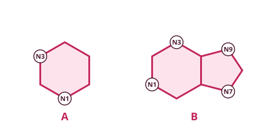

Compuestos aromáticos que absorben luz ultravioleta (se cuantifican por espectrometría). Son lo que cambia entre nucleótidos y determinan la secuencia genética.

A: pirimidina (un anillo; se une al azúcar por el N1). B: purina (pirimidina + imidazol; se une por el N9).
Base
Tipo
Nombre químico
Dónde
Adenina
Purina
6-aminopurina
ADN y ARN
Guanina
Purina
2-amino-6-oxopurina
ADN y ARN
Citosina
Pirimidina
2-oxo-4-aminopirimidina
ADN y ARN
Uracilo
Pirimidina
2,4-dioxopirimidina
Solo ARN
Timina
Pirimidina
2,4-dioxo-5-metilpirimidina
Solo ADN
Tautomería: amino-imino (adenina, citosina) y ceto-enol (guanina, timina). A pH fisiológico predominan las formas ceto (lactámicas).
2. Nucleósidos y nucleótidos Muy importante
Nucleósido = base + pentosa, por un enlace β-N-glucosídico entre el C1' del azúcar y el N1 (pirimidinas) o el N9 (purinas).
Ribosa (OH en C2') → ribonucleósidos (ARN). 2-desoxirribosa (H en C2') → desoxirribonucleósidos (ADN).
Nucleótido = nucleósido + ácido fosfórico por enlace fosfoéster en el C5'. Son ácidos fuertes y solubles.
Base
Ribonucleósido
Ribonucleótido
Desoxirribonucleótido
Adenina
Adenosina
AMP (adenilato)
dAMP
Guanina
Guanosina
GMP (guanilato)
dGMP
Citosina
Citidina
CMP (citidilato)
dCMP
Uracilo / timina
Uridina
UMP (uridilato)
dTMP (desoxitimidina)
Nucleótidos no nucleicos: ATP (moneda energética), NAD⁺, FAD, coenzima A y AMPc (segundo mensajero de hormonas hidrosolubles; el fosfato une el C3' y el C5').
3. Polinucleótidos Muy importante
Los nucleótidos se unen por enlaces fosfodiéster: el fosfato se une al C5' de un nucleótido y al C3' del siguiente. La cadena tiene dirección 5'→3' (un extremo con fosfato 5' y otro con OH 3' libres). El esqueleto es de azúcar y fosfato (constante); las bases quedan hacia dentro.
4. Síntesis de nucleótidos Muy importante
Vía de recuperación (salvamento)
Vía de novo
Qué hace
Recicla bases y nucleósidos del recambio o de la dieta (≈ 90 % de las purinas libres)
Construye la base desde precursores (ribosa, aminoácidos, CO₂…)
Velocidad y coste
Rápida, poco gasto: la habitual
Lenta, mucho gasto, pero da autonomía de la dieta
PRPP (5-fosforribosil-1-pirofosfato)
Ribosa-5-P (de la ruta de las pentosas) + pirofosfato del ATP en el C1' (PRPP sintetasa). Es el precursor de la recuperación y de la síntesis de novo de purinas; en las pirimidinas aparece a mitad de ruta.
Regulación por retroinhibición: IMP, AMP y GMP inhiben la PRPP sintetasa y la amidotransferasa; el AMP frena su rama (IMP → adenilosuccinato) y el GMP la suya (IMP → XMP). Cada rama gasta el trifosfato de la otra, lo que equilibra ambas.
Síntesis de novo de pirimidinas
Precursor: carbamoil fosfato (CO₂ + glutamina + fosfato) por la carbamoil fosfato sintetasa II, citosólica. (La CPS I es mitocondrial y del ciclo de la urea.)
Orotato + PRPP → OMP → (− CO₂) UMP → UTP → CTP (se añade un amino). Sin UMP no hay CMP.
Regulación: el UTP inhibe la CPS II, el CTP inhibe la aspartato carbamoil transferasa y el PRPP la estimula.
Diferencia clave
En las purinas el anillo se construye sobre el PRPP; en las pirimidinas primero se forma la base (orotato) y después se une al PRPP.
Desoxirribonucleótidos
No hay ruta propia: la ribonucleótido reductasa (con tiorredoxina) cambia el OH del C2' por un H. Después, la timidilato sintasa metila el dUMP → dTMP.
5. Degradación de nucleótidos Muy importante
AMP → (desaminación en el músculo, o hidrólisis en otros tejidos) → IMP o adenosina → inosina → hipoxantina.
GMP → guanosina → guanina → xantina.
Hipoxantina y xantina → ácido úrico, producto final en el ser humano, que se excreta.
Purinas: la gota se debe al exceso de ácido úrico; el síndrome de Lesch-Nyhan, a la falta de HGPRT. Pirimidinas: la aciduria orótica, a un fallo en el paso de orotato a UMP.